Location: Gowainghat, Sylhet | Distance: 62 km from Sylhet City
Jaflong is famous for its crystal clear Piyain River, white stones and the beautiful Meghalaya hills of India. Tourists come here for boat ride, stone collection and hill view. Best time to visit is October to March.
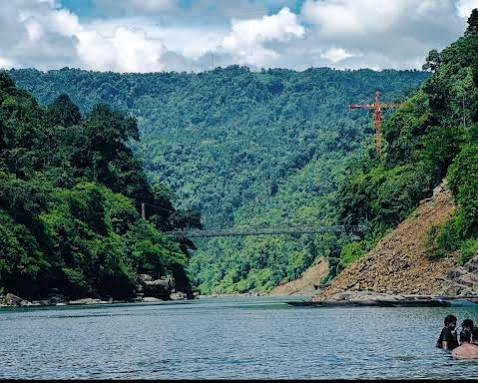
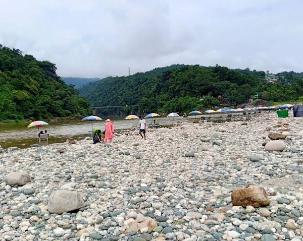
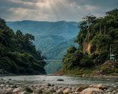
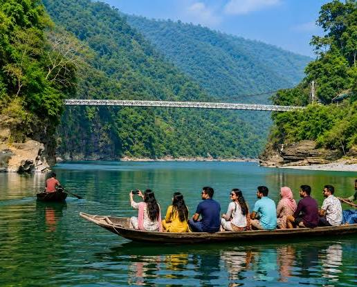
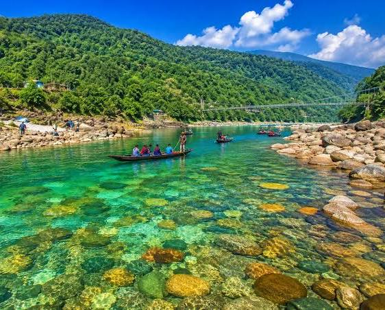
Location: Gowainghat, Sylhet | Distance: 26 km from Sylhet City
Ratargul is the only freshwater swamp forest in Bangladesh. In rainy season, the whole forest goes under water and you have to travel by boat through the trees. It is called the Amazon of Sylhet.
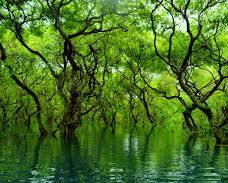
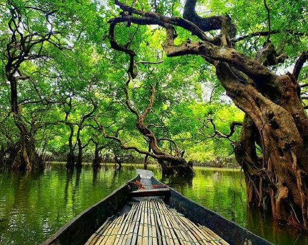
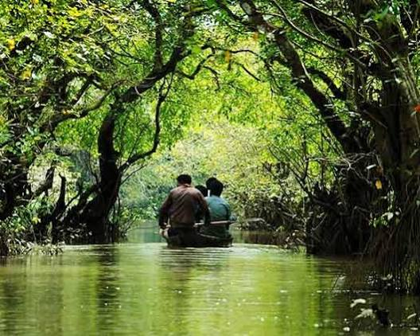
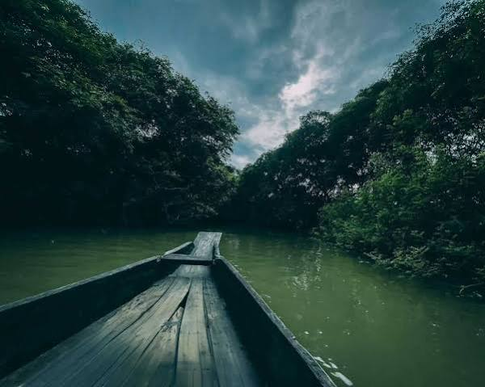
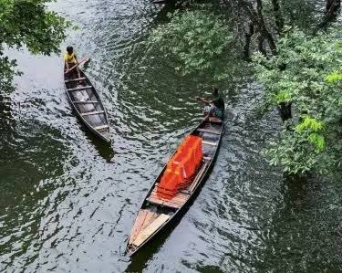
Location: Rustompur, Gowainghat | Distance: 60 km from Sylhet City
Bichanakandi is famous for clear water, big stones and green hills. The water coming from Meghalaya is so clear that you can see the stones under water. It is the most photogenic place in Sylhet.
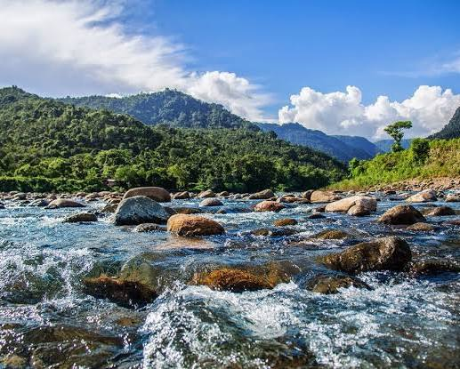
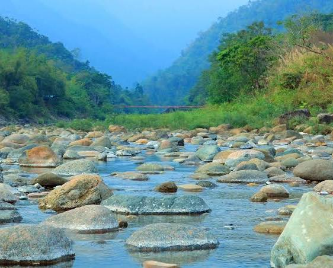
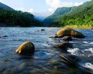
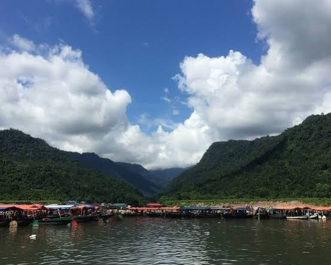
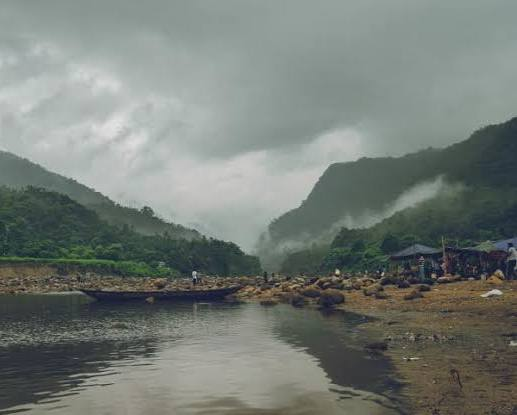
Location: Jaintiapur, Sylhet | Distance: 35 km from Sylhet City
Lalakhal is famous for its blue and green coloured water. The Sari River flows here. The colour of water changes with sunlight. Tea gardens and hills make this place more beautiful.
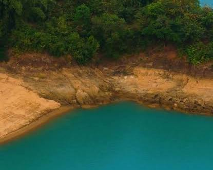
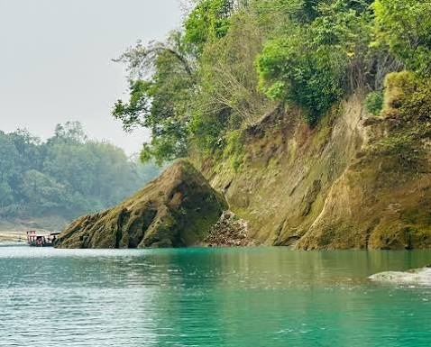
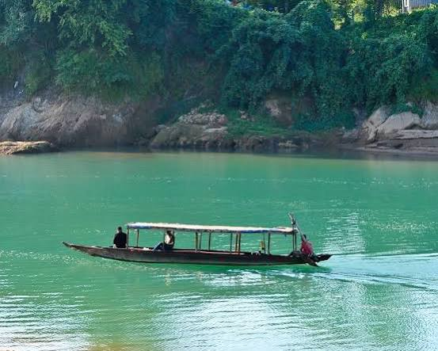
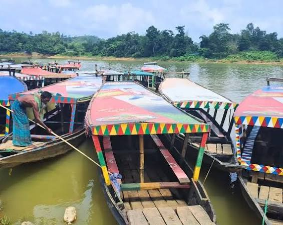
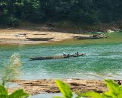
Location: Companiganj, Sylhet | Distance: 33 km from Sylhet City
Sada Pathor means White Stone. The Dholai river brings white stones from Meghalaya hills. Cold crystal clear water and white stones make it a perfect place for family picnic and bathing.
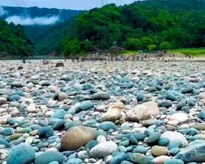
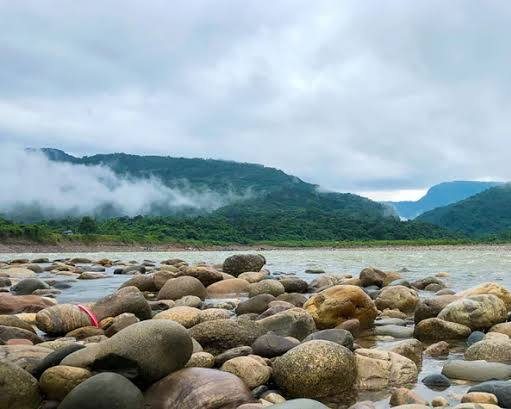
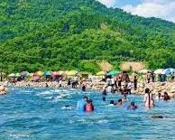
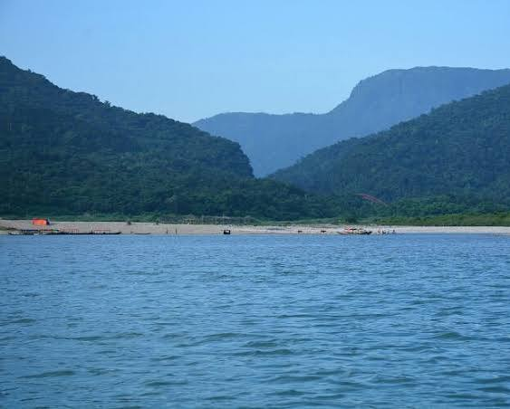
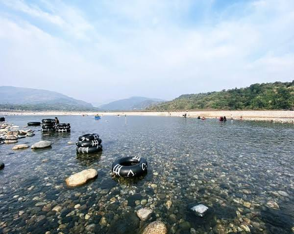
Location: Barlekha, Moulvibazar | Distance: 80 km from Sylhet City
Madhabkunda is the largest waterfall in Bangladesh. Water falls from about 162 feet high. Surrounded by big hills and green forest, it is a very popular tourist spot for nature lovers.
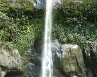
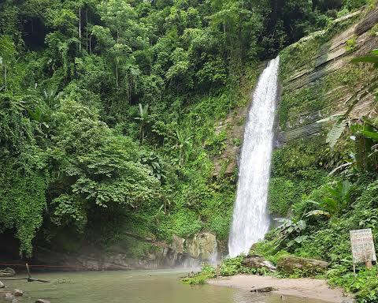
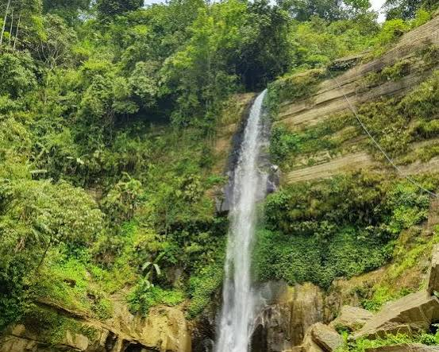
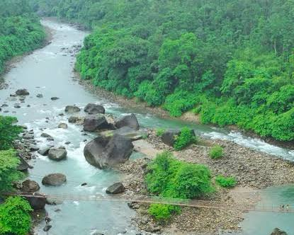
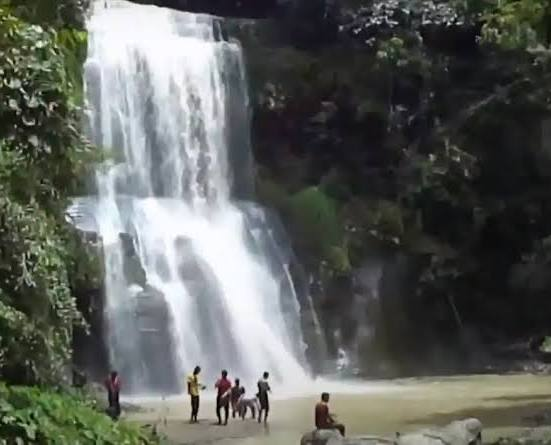